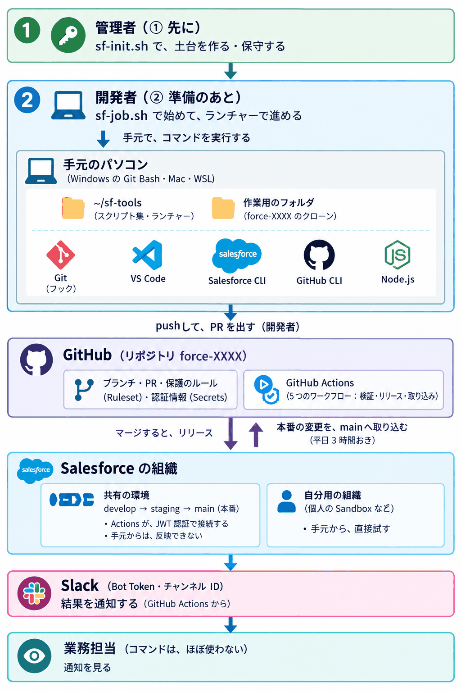

🚀 sf-tools
ソースコードを Git で管理する、普通の開発の流れの中で、Salesforce の検証から本番へのリリースまでを、自動でつなげる道具です。
- 🔑 最初の準備（プロジェクトのリポジトリ作り）は、プロジェクト管理者が、先に 1 回だけ行います。そのあとは、ときどきの保守だけです。
- 💻 毎日の作業で使うのは、おもに開発者です。管理者の準備が終わってから始めます。コマンドは、ランチャー（番号で選ぶメニュー）から使うのがおすすめです。
- 👀 業務担当の方が、コマンドを使う必要は、ほとんどありません。Slack に届く結果の通知を見る形で、関わります。
全体の構成（登場人物と、使っているもの）
sf-tools には、3 種類の人が関わり、4 つの場所（手元のパソコン・GitHub・Salesforce の組織・Slack）を使います。まず、全体を、1 枚の図で見てください。
この図の見方: 上から下へ読みます（人 → 手元のパソコン → GitHub → Salesforce の組織 → Slack → 業務担当）。①②の番号は、作業の順番です。管理者が先に準備し、そのあとで、開発者が始めます。


文字で読む版（同じ内容。色の凡例つき）
実線の矢印（↓）と実線の箱は、人が行うこと、点線の矢印（⇣）と点線の箱は、自動で動くことです。
誰が、どこで、何を使って、何が自動で動くのか
管理者が用意・操作する開発者が使う業務担当自動で動く
💻 手元のパソコンWindows（Git Bash）・Mac・WSL
使う道具: Git・VS Code・Salesforce CLI・GitHub CLI・Node.js（用途は、図の下の表）
🐙 GitHubリポジトリ force-XXXX
☁️ Salesforce の組織
💬 Slack
登場人物
| 役割 | やること | 使うもの |
|---|---|---|
| 🔑 プロジェクト管理者（先に） | 最初に 1 回、土台を作ります（GitHub のリポジトリ・ブランチと保護のルール・Salesforce への接続・Slack・認証情報・ワークフロー）。あとから、認証情報の更新・ワークフローの更新・構成の変更と診断（段階の追加・接続先の付け替え・状態の確認）・動作の確認を行います。 | sf-init.sh（--add-tier・--reconnect・--status・--verify）・sf-update-secret.sh・sf-sync-wf.sh |
| 💻 開発者（管理者の準備のあと） | 作業を始めて、手元で作り、自分用の組織で試して、push と PR で送ります。 | sf-job.sh・ランチャー（sf-launcher.sh。Check・Dryrun・Push・Next など） |
| 👀 業務担当 | Slack に届く、結果の通知を見ます。 | Slack（コマンドを使う必要は、ほとんどありません） |
使っているもの
| 場所 | もの | 何のために |
|---|---|---|
| 💻 手元のパソコン | ~/sf-tools | sf-tools のスクリプト集。各プロジェクトのフォルダから呼び出します |
ランチャー（sf-launcher.sh） | コマンドを、番号で選んで実行するメニュー | |
作業用のフォルダ（force-XXXX のクローン） | ここで作ります。設定は sf-tools/config/、リリースの対象は sf-tools/release/<ブランチ名>/ のターゲットファイルに書きます（ブランチ名は、ジョブ名と同じ） | |
| Git（Windows は Git Bash） | 変更の履歴の管理。commit・push の前に、フック（pre-commit・pre-push）が、ターゲットファイルなどを確かめます | |
| VS Code（Salesforce の拡張機能） | エディタの起動・コミットメッセージの入力。拡張機能は、入れておくのがおすすめです | |
Salesforce CLI（sf。npm 版） | 組織への接続・反映・取得 | |
GitHub CLI（gh） | GitHub へのログイン・作業用のブランチの作成・PR の状況の確認（管理者は、リポジトリの作成・認証情報の登録にも） | |
| Node.js | Salesforce CLI を入れるために必要 | |
| 🐙 GitHub | リポジトリ force-XXXX | ブランチ main・staging・develop（段階の数は 1〜3）と、作業用のブランチを置きます |
| PR | 変更の取り込みの依頼。レビューと、自動の検証の結果を、ここで見ます | |
| ブランチの保護（Ruleset） | main・staging の削除・強制プッシュを禁止し、必須チェックが通るまで、マージを止めます（GitHub のプランによっては、設定できません） | |
| Secrets・Variables | Actions が使う認証情報（Salesforce・Slack・GitHub のトークン）と、接続先の情報 | |
| GitHub Actions | 検証・リリース・同期を、自動で行います（5 つのワークフロー。下の折りたたみ） | |
| ☁️ Salesforce | 共有の環境の組織 | develop・staging・main（本番）の組織。Actions が JWT 認証で接続して、リリースします（本番からは、取り込みも） |
| 自分用の組織 | 個人の Sandbox など。手元から、ブラウザでログインして接続し、試します | |
| 💬 Slack | Bot Token・チャンネル ID | リリースの結果などを、チャンネルに通知します |
GitHub Actions の 5 つのワークフロー
| ワークフロー | 動くとき | すること |
|---|---|---|
wf-validate（PR の検証） | PR の作成・更新のたび | dry-run で検証し、結果を PR にコメントする |
wf-sequence（マージ順序の確認） | main・staging への PR | マージの順序を確認する |
wf-release（リリース） | PR のマージ | 対応する組織へリリースし、Slack に通知する |
wf-propagate（下位ブランチへの伝播） | main への PR のマージ | main の変更を、staging・develop へ伝える |
wf-metasync（本番の自動同期） | 平日 3 時間おき | 本番の組織のメタデータを、main へ取り込む |
wf-validate・wf-release・wf-metasync は、動くたびに、公開されている sf-tools を取ってきて、その中のスクリプトを使います。くわしくは、ワークフローの全体像にあります。
sf-tools の位置づけ
Salesforce の組織は、そのままでは、Git で管理されていません。変更の履歴が残らず、誰が、いつ、何を変えたかを、あとから追いにくい状態です。
sf-tools は、ソースコードを Git で管理する、普通の開発の流れ（手元で開発 → commit・push → PR → マージ）の中で、検証から本番へのリリースまでを、自動でつなげます。共有の環境へのリリースは、組織に向けて直接コマンドを打つのではなく、Git への変更の取り込み（マージ）の結果として起きます。自分用の組織には、手元から試せます。
変更セットでリリースするやり方とは、別のアプローチです。どちらかが正しい、ということではありません。sf-tools は、Git を中心にして開発したいチームのための道具です。
従来のやり方と、sf-tools のやり方
🏢 変更セット・組織での直接の修正組織が中心（Git では管理しない）
- 🖱️組織の画面で、変更して、リリースする
- 🗂️変更の中身は、組織の中にある
- 🕓Git のような変更の履歴は、残らない
- ✋追加の道具なしで、すぐに始められる
🌿 sf-toolsGit が中心（変更は、Git を通って組織へ）
- 📜変更の履歴が、Git に残る（誰が・いつ・何を）
- 👀PR で、レビューできる
- 🤖反映の前に、自動でチェックされる
- 🔢操作は、ランチャーの番号を選ぶだけ
内部では、Salesforce CLI（sf）を使っています。CLI は強力ですが、使いこなすのが難しいため、sf-tools が包んで、日々の作業を「番号を選ぶだけ」にしました。コマンドの寄せ集めではなく、開発の流れと、自動の仕組み（GitHub Actions）が、一続きでつながる仕組みです。
技術的には、パソコンの ~/sf-tools に置いたスクリプト（Bash）を、各プロジェクトのフォルダから呼び出す作りです。共有の環境（本番など）への検証とリリースは、GitHub Actions（GitHub 上の自動処理）が行います。手元のパソコンから試せるのは、自分用の組織（個人の Sandbox など）だけです。
sf-tools の特長（4 つ）
土台を、コマンド 1 つで作れる
sf-init.sh が、対話しながら順に案内して、リポジトリから接続・自動処理までを用意します。
特長 2リリースが、Git の流れの中で起きる
PR とマージの流れの中で、検証から本番へのリリースまでが、自動でつながります。
特長 3本番の変更を、定期的に Git へ取り込む
sf-tools を通らない変更があっても、Git は、あとで本番に追いつきます。
特長 4Windows・Mac・WSL のどれでも動く
追加のインストールなしで、どの環境でも、同じように使えます。
土台を、コマンド 1 つで作れる
管理者が sf-init.sh を実行すると、対話しながら、順に案内します（ウィザード）。GitHub のリポジトリの作成から、ワークフローの配置まで、手作業の設定は、ほぼ要りません。かかる時間の目安は、30〜60 分です（ブラウザでの作業と、Salesforce の反映待ちを含みます）。
土台を、コマンド 1 つで
リリースが、Git の流れの中で起きる
手元で開発して Git に収め、PR とマージの流れの中で、検証から本番へのリリースまでが、自動でつながります（流れの全体は、まず、全体の流れ）。
Git の流れにのせると、手に入るもの
本番の変更を、定期的に Git へ取り込む
本番（prod の名前で接続した、main の組織）の最新のメタデータを、平日に 1 日 4 回（3 時間おき）、Git の main へ取り込み、ほかの段階のブランチにも伝えます。sf-tools を使わないリリース（変更セット・本番の直接の修正）があっても、Git は、あとで本番に追いつきます。
本番の変更も、Git に追いつく
その上で開発するので、古い状態を土台にした作業や、気づかない上書きを、避けやすくなります。重なった変更は、早い段階で（sf-push.sh が main を取り込むときや、PR の時点で）見つかり、止まります。
Windows・Mac・WSL のどれでも動く
Bash の入れ直しなどの、追加のインストールなしで、どの環境でも、同じように使えます（Windows は Git Bash、Mac は標準のターミナルと標準の Bash のまま）。確かめた内容は、動作環境にあります。
どの環境でも、同じように
AI でコードを作る開発でも、手元で作って、Git で管理し、GitHub に集める流れは、変わりません。sf-tools は、その流れの中で、検証からリリースまでを、番号を選ぶだけの操作でつなぎます。Git や GitHub に詳しくない方でも使えるように、画面の操作（変更セットなど）の代わりに、決まったコマンドを用意しています。
確認の範囲
どこまで確かめたか
まず、全体の流れ
sf-tools は、管理者が、sf-tools の雛形で作った、決まった形のリポジトリ（force-XXXX）の上でしか動きません。そのため、最初に、管理者が、リポジトリを作ります。開発者は、それが終わってから始めます。管理者と開発者の作業は、並行して進められません。リポジトリがまだないうちに、開発者が sf-job.sh を実行しても、止まります。
🔑 ① 管理者（最初に、1 回だけ）
💻 ② 開発者（毎日）
あなたはどれですか？
管理者ガイド
まずは、ここから。新しいプロジェクトの作り方、秘密鍵やワークフローの更新、動作の確認、困ったときの対処。
💻 開発者の方（管理者の準備のあと）使い方ガイド
管理者から「できました」と連絡を受けてから。毎日の開発の流れまで。必要なツールのインストールは、先に済ませておきます（左の目次の「前提条件とインストール」）。
📖 調べたい方リファレンス
全コマンドの説明、ターゲットファイルの書き方、ログの場所とフォルダの構成。
🧭 仕組みを知りたい方設計と背景
なぜこの作りなのか。ブランチと組織の対応、自動処理の全体像。
🔤 言葉が分からないとき用語集
PR・ブランチ・dry-run など、文書に出てくる言葉を、やさしく説明します。
最短で試す
プロジェクト（force-XXXX）は、管理者が先に作ります（管理者ガイド）。管理者から「できました」と連絡を受けて、リポジトリの名前を聞いてから、始めてください。まだないうちは、下の手順は動きません。必要なツール（Git・Salesforce CLI など）も、あらかじめ入れておきます（前提条件とインストール）。
-
sf-tools をパソコンに置いて、どこからでも使えるようにします（最初の 1 回だけです）。
git clone https://github.com/tama-create/sf-tools.git ~/sf-tools echo 'export PATH="$HOME/sf-tools/bin:$PATH"' >> ~/.bashrc # Mac は ~/.zshrcそのあと、ターミナルを開き直します。
-
作業フォルダ（作業用のフォルダを置く場所。おすすめは
~/sfのような短い名前）で、新しい作業を始めます。ジョブ名（作業の名前。ブランチの名前になります。例:JOB-20261025）を入力すると、作業用のブランチとコピーの準備、Salesforce の自分用の組織へのログイン、VS Code の起動までが進みます。初めてのときは、プロジェクトの名前（force-XXXXのXXXX）も聞かれます（初めての作業）。mkdir -p ~/sf && cd ~/sf sf-job.sh -
作業を始めると、VS Code が開き、ターミナルにはランチャー（メニュー）が自動で開きます。変更を書いたら、ランチャーの番号のキーを押して進めます（
[1]で確認、[4]で自分の組織で試す、[2]で変更を送る、[3]で次の PR を出す）。コマンドを覚える必要は、ありません。[1] Check ターゲットファイルの構文チェック [2] Push 変更をコミット & プッシュ [3] Next 次の PR 先ブランチを確認 ……コマンドに慣れている方は、
sf-push.shのように、直接打つこともできます。メニューを出し直したいときは、sf-launcher.shと打ちます（くわしくは日々の開発の流れ）。
Windows は Git Bash（PowerShell・コマンドプロンプトでは動きません）、Mac は標準のターミナル、WSL は Ubuntu で使えます。実際に動かして確かめた環境の一覧は、動作環境にあります。